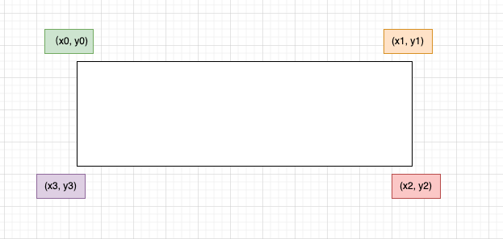

Overview
After executing the mineru command, in addition to outputting files related to markdown, several other files unrelated to markdown will also be generated. These files will be introduced one by one.
some_pdf_layout.pdf
Each page's layout consists of one or more bounding boxes. The number in the top-right corner of each box indicates the reading order. Additionally, different content blocks are highlighted with distinct background colors within the layout.pdf.

some_pdf_spans.pdf(Applicable only to the pipeline backend)
All spans on the page are drawn with different colored line frames according to the span type. This file can be used for quality control, allowing for quick identification of issues such as missing text or unrecognized inline formulas.

some_pdf_model.json(Applicable only to the pipeline backend)
Structure Definition
from pydantic import BaseModel, Field
from enum import IntEnum
class CategoryType(IntEnum):
title = 0 # Title
plain_text = 1 # Text
abandon = 2 # Includes headers, footers, page numbers, and page annotations
figure = 3 # Image
figure_caption = 4 # Image description
table = 5 # Table
table_caption = 6 # Table description
table_footnote = 7 # Table footnote
isolate_formula = 8 # Block formula
formula_caption = 9 # Formula label
embedding = 13 # Inline formula
isolated = 14 # Block formula
text = 15 # OCR recognition result
class PageInfo(BaseModel):
page_no: int = Field(description="Page number, the first page is 0", ge=0)
height: int = Field(description="Page height", gt=0)
width: int = Field(description="Page width", ge=0)
class ObjectInferenceResult(BaseModel):
category_id: CategoryType = Field(description="Category", ge=0)
poly: list[float] = Field(description="Quadrilateral coordinates, representing the coordinates of the top-left, top-right, bottom-right, and bottom-left points respectively")
score: float = Field(description="Confidence of the inference result")
latex: str | None = Field(description="LaTeX parsing result", default=None)
html: str | None = Field(description="HTML parsing result", default=None)
class PageInferenceResults(BaseModel):
layout_dets: list[ObjectInferenceResult] = Field(description="Page recognition results", ge=0)
page_info: PageInfo = Field(description="Page metadata")
# The inference results of all pages, ordered by page number, are stored in a list as the inference results of MinerU
inference_result: list[PageInferenceResults] = []
The format of the poly coordinates is [x0, y0, x1, y1, x2, y2, x3, y3], representing the coordinates of the top-left, top-right, bottom-right, and bottom-left points respectively. 
example
[
{
"layout_dets": [
{
"category_id": 2,
"poly": [
99.1906967163086,
100.3119125366211,
730.3707885742188,
100.3119125366211,
730.3707885742188,
245.81326293945312,
99.1906967163086,
245.81326293945312
],
"score": 0.9999997615814209
}
],
"page_info": {
"page_no": 0,
"height": 2339,
"width": 1654
}
},
{
"layout_dets": [
{
"category_id": 5,
"poly": [
99.13092803955078,
2210.680419921875,
497.3183898925781,
2210.680419921875,
497.3183898925781,
2264.78076171875,
99.13092803955078,
2264.78076171875
],
"score": 0.9999997019767761
}
],
"page_info": {
"page_no": 1,
"height": 2339,
"width": 1654
}
}
]
some_pdf_model_output.txt (Applicable only to the VLM backend)
This file contains the output of the VLM model, with each page's output separated by ----.
Each page's output consists of text blocks starting with <|box_start|> and ending with <|md_end|>.
The meaning of each field is as follows:
- <|box_start|>x0 y0 x1 y1<|box_end|>
x0 y0 x1 y1 represent the coordinates of a quadrilateral, indicating the top-left and bottom-right points. The values are based on a normalized page size of 1000x1000.
- <|ref_start|>type<|ref_end|>
type indicates the block type. Possible values are:
{
"text": "Text",
"title": "Title",
"image": "Image",
"image_caption": "Image Caption",
"image_footnote": "Image Footnote",
"table": "Table",
"table_caption": "Table Caption",
"table_footnote": "Table Footnote",
"equation": "Interline Equation"
}
<|md_start|>Markdown content<|md_end|>This field contains the Markdown content of the block. If
type is text, the end of the text may contain the <|txt_contd|> tag, indicating that this block can be connected with the following text block(s).
If type is table, the content is in otsl format and needs to be converted into HTML for rendering in Markdown.
some_pdf_middle.json
| Field Name | Description |
|---|---|
| pdf_info | list, each element is a dict representing the parsing result of each PDF page, see the table below for details |
| _backend | pipeline | vlm, used to indicate the mode used in this intermediate parsing state |
| _version_name | string, indicates the version of mineru used in this parsing |
pdf_info
Field structure description
| Field Name | Description |
|---|---|
| preproc_blocks | Intermediate result after PDF preprocessing, not yet segmented |
| layout_bboxes | Layout segmentation results, containing layout direction (vertical, horizontal), and bbox, sorted by reading order |
| page_idx | Page number, starting from 0 |
| page_size | Page width and height |
| _layout_tree | Layout tree structure |
| images | list, each element is a dict representing an img_block |
| tables | list, each element is a dict representing a table_block |
| interline_equations | list, each element is a dict representing an interline_equation_block |
| discarded_blocks | List, block information returned by the model that needs to be dropped |
| para_blocks | Result after segmenting preproc_blocks |
In the above table, para_blocks is an array of dicts, each dict representing a block structure. A block can support up to one level of nesting.
block
The outer block is referred to as a first-level block, and the fields in the first-level block include:
| Field Name | Description |
|---|---|
| type | Block type (table|image) |
| bbox | Block bounding box coordinates |
| blocks | list, each element is a dict representing a second-level block |
There are only two types of first-level blocks: "table" and "image". All other blocks are second-level blocks.
The fields in a second-level block include:
| Field Name | Description |
|---|---|
| type | Block type |
| bbox | Block bounding box coordinates |
| lines | list, each element is a dict representing a line, used to describe the composition of a line of information |
Detailed explanation of second-level block types
| type | Description |
|---|---|
| image_body | Main body of the image |
| image_caption | Image description text |
| image_footnote | Image footnote |
| table_body | Main body of the table |
| table_caption | Table description text |
| table_footnote | Table footnote |
| text | Text block |
| title | Title block |
| index | Index block |
| list | List block |
| interline_equation | Block formula |
line
The field format of a line is as follows:
| Field Name | Description |
|---|---|
| bbox | Bounding box coordinates of the line |
| spans | list, each element is a dict representing a span, used to describe the composition of the smallest unit |
span
| Field Name | Description |
|---|---|
| bbox | Bounding box coordinates of the span |
| type | Type of the span |
| content | img_path | Text spans use content, chart spans use img_path to store the actual text or screenshot path information |
The types of spans are as follows:
| type | Description |
|---|---|
| image | Image |
| table | Table |
| text | Text |
| inline_equation | Inline formula |
| interline_equation | Block formula |
Summary
A span is the smallest storage unit for all elements.
The elements stored within para_blocks are block information.
The block structure is as follows:
First-level block (if any) -> Second-level block -> Line -> Span
example
{
"pdf_info": [
{
"preproc_blocks": [
{
"type": "text",
"bbox": [
52,
61.956024169921875,
294,
82.99800872802734
],
"lines": [
{
"bbox": [
52,
61.956024169921875,
294,
72.0000228881836
],
"spans": [
{
"bbox": [
54.0,
61.956024169921875,
296.2261657714844,
72.0000228881836
],
"content": "dependent on the service headway and the reliability of the departure ",
"type": "text",
"score": 1.0
}
]
}
]
}
],
"layout_bboxes": [
{
"layout_bbox": [
52,
61,
294,
731
],
"layout_label": "V",
"sub_layout": []
}
],
"page_idx": 0,
"page_size": [
612.0,
792.0
],
"_layout_tree": [],
"images": [],
"tables": [],
"interline_equations": [],
"discarded_blocks": [],
"para_blocks": [
{
"type": "text",
"bbox": [
52,
61.956024169921875,
294,
82.99800872802734
],
"lines": [
{
"bbox": [
52,
61.956024169921875,
294,
72.0000228881836
],
"spans": [
{
"bbox": [
54.0,
61.956024169921875,
296.2261657714844,
72.0000228881836
],
"content": "dependent on the service headway and the reliability of the departure ",
"type": "text",
"score": 1.0
}
]
}
]
}
]
}
],
"_backend": "pipeline",
"_version_name": "0.6.1"
}
some_pdf_content_list.json
This file is a JSON array where each element is a dict storing all readable content blocks in the document in reading order.
content_list can be viewed as a simplified version of middle.json. The content block types are mostly consistent with those in middle.json, but layout information is not included.
The content has the following types:
| type | desc |
|---|---|
| image | Image |
| table | Table |
| text | Text / Title |
| equation | Block formula |
Please note that both title and text blocks in content_list are uniformly represented using the text type. The text_level field is used to distinguish the hierarchy of text blocks:
- A block without the text_level field or with text_level=0 represents body text.
- A block with text_level=1 represents a level-1 heading.
- A block with text_level=2 represents a level-2 heading, and so on.
Each content contains the page_idx field, indicating the page number (starting from 0) where the content block resides.
example
[
{
"type": "text",
"text": "The response of flow duration curves to afforestation ",
"text_level": 1,
"page_idx": 0
},
{
"type": "text",
"text": "Received 1 October 2003; revised 22 December 2004; accepted 3 January 2005 ",
"page_idx": 0
},
{
"type": "text",
"text": "Abstract ",
"text_level": 2,
"page_idx": 0
},
{
"type": "text",
"text": "The hydrologic effect of replacing pasture or other short crops with trees is reasonably well understood on a mean annual basis. The impact on flow regime, as described by the annual flow duration curve (FDC) is less certain. A method to assess the impact of plantation establishment on FDCs was developed. The starting point for the analyses was the assumption that rainfall and vegetation age are the principal drivers of evapotranspiration. A key objective was to remove the variability in the rainfall signal, leaving changes in streamflow solely attributable to the evapotranspiration of the plantation. A method was developed to (1) fit a model to the observed annual time series of FDC percentiles; i.e. 10th percentile for each year of record with annual rainfall and plantation age as parameters, (2) replace the annual rainfall variation with the long term mean to obtain climate adjusted FDCs, and (3) quantify changes in FDC percentiles as plantations age. Data from 10 catchments from Australia, South Africa and New Zealand were used. The model was able to represent flow variation for the majority of percentiles at eight of the 10 catchments, particularly for the 10–50th percentiles. The adjusted FDCs revealed variable patterns in flow reductions with two types of responses (groups) being identified. Group 1 catchments show a substantial increase in the number of zero flow days, with low flows being more affected than high flows. Group 2 catchments show a more uniform reduction in flows across all percentiles. The differences may be partly explained by storage characteristics. The modelled flow reductions were in accord with published results of paired catchment experiments. An additional analysis was performed to characterise the impact of afforestation on the number of zero flow days $( N _ { \\mathrm { z e r o } } )$ for the catchments in group 1. This model performed particularly well, and when adjusted for climate, indicated a significant increase in $N _ { \\mathrm { z e r o } }$ . The zero flow day method could be used to determine change in the occurrence of any given flow in response to afforestation. The methods used in this study proved satisfactory in removing the rainfall variability, and have added useful insight into the hydrologic impacts of plantation establishment. This approach provides a methodology for understanding catchment response to afforestation, where paired catchment data is not available. ",
"page_idx": 0
},
{
"type": "text",
"text": "1. Introduction ",
"text_level": 2,
"page_idx": 1
},
{
"type": "image",
"img_path": "images/a8ecda1c69b27e4f79fce1589175a9d721cbdc1cf78b4cc06a015f3746f6b9d8.jpg",
"img_caption": [
"Fig. 1. Annual flow duration curves of daily flows from Pine Creek, Australia, 1989–2000. "
],
"img_footnote": [],
"page_idx": 1
},
{
"type": "equation",
"img_path": "images/181ea56ef185060d04bf4e274685f3e072e922e7b839f093d482c29bf89b71e8.jpg",
"text": "$$\nQ _ { \\% } = f ( P ) + g ( T )\n$$",
"text_format": "latex",
"page_idx": 2
},
{
"type": "table",
"img_path": "images/e3cb413394a475e555807ffdad913435940ec637873d673ee1b039e3bc3496d0.jpg",
"table_caption": [
"Table 2 Significance of the rainfall and time terms "
],
"table_footnote": [
"indicates that the rainfall term was significant at the $5 \\%$ level, $T$ indicates that the time term was significant at the $5 \\%$ level, \\* represents significance at the $10 \\%$ level, and na denotes too few data points for meaningful analysis. "
],
"table_body": "<html><body><table><tr><td rowspan=\"2\">Site</td><td colspan=\"10\">Percentile</td></tr><tr><td>10</td><td>20</td><td>30</td><td>40</td><td>50</td><td>60</td><td>70</td><td>80</td><td>90</td><td>100</td></tr><tr><td>Traralgon Ck</td><td>P</td><td>P,*</td><td>P</td><td>P</td><td>P,</td><td>P,</td><td>P,</td><td>P,</td><td>P</td><td>P</td></tr><tr><td>Redhill</td><td>P,T</td><td>P,T</td><td>，*</td><td>**</td><td>P.T</td><td>P,*</td><td>P*</td><td>P*</td><td>*</td><td>，*</td></tr><tr><td>Pine Ck</td><td></td><td>P,T</td><td>P,T</td><td>P,T</td><td>P,T</td><td>T</td><td>T</td><td>T</td><td>na</td><td>na</td></tr><tr><td>Stewarts Ck 5</td><td>P,T</td><td>P,T</td><td>P,T</td><td>P,T</td><td>P.T</td><td>P.T</td><td>P,T</td><td>na</td><td>na</td><td>na</td></tr><tr><td>Glendhu 2</td><td>P</td><td>P,T</td><td>P,*</td><td>P,T</td><td>P.T</td><td>P,ns</td><td>P,T</td><td>P,T</td><td>P,T</td><td>P,T</td></tr><tr><td>Cathedral Peak 2</td><td>P,T</td><td>P,T</td><td>P,T</td><td>P,T</td><td>P,T</td><td>*,T</td><td>P,T</td><td>P,T</td><td>P,T</td><td>T</td></tr><tr><td>Cathedral Peak 3</td><td>P.T</td><td>P.T</td><td>P,T</td><td>P,T</td><td>P,T</td><td>T</td><td>P,T</td><td>P,T</td><td>P,T</td><td>T</td></tr><tr><td>Lambrechtsbos A</td><td>P,T</td><td>P</td><td>P</td><td>P,T</td><td>*,T</td><td>*,T</td><td>*,T</td><td>*,T</td><td>*,T</td><td>T</td></tr><tr><td>Lambrechtsbos B</td><td>P,T</td><td>P,T</td><td>P,T</td><td>P,T</td><td>P,T</td><td>P,T</td><td>P,T</td><td>P,T</td><td>T</td><td>T</td></tr><tr><td>Biesievlei</td><td>P,T</td><td>P.T</td><td>P,T</td><td>P,T</td><td>*,T</td><td>*,T</td><td>T</td><td>T</td><td>P,T</td><td>P,T</td></tr></table></body></html>",
"page_idx": 5
}
]